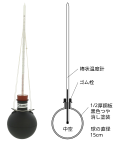

2026年
問題23 熱中症予防の指標となる暑さ指数（\({\rm WBGT}\)）に関する次の文章の 内に入る語句の組合せとして，正しいものはどれか．
暑さ指数（\({\rm （WBGT）}\)）は，屋内や屋外で太陽照射のない場合，\(0.7T_A+0.3T_B\)で求められる．ただし，\(T_A\)は ア ，\(T_B\)は イ である．
アイ
(1)黒球温度 湿球温度
(2)湿球温度 乾球温度
(3)湿球温度 黒球温度
(4)乾球温度 黒球温度
(5)乾球温度 湿球温度
2026年
問題23 正解（3） 頻出度AAA
与えられた\({\rm WBGT}\)の計算式の\(T_A\)は湿球温度，\(T_B\)は黒球温度（グローブ温度）である．
黒球温度とはグローブ温度計で測定した温度である．
エネルギー代謝量，着衣量，空気温度，放射温度，気流，湿度の6つを人体の熱的快適感に影響する主要な温熱環境要素（温熱因子）という．
人間はこれらの温熱環境要素を個々に区別して暑い寒いを感じているわけではなく，それらが複合した結果を感じている．これ等の温熱環境要素を単一の指標（温熱環境指数）で表現し，体感温度・熱的快適環境を追求する試みが古くから行われてきた（2026-23-1表，2026-23-2表参照）．
2026-23-1表 温熱環境指数は次の3つに大別される
| 体感温度を示す主な温熱環境指数 | 測定器を用いて計測した示度を指標とする指数 | 湿球温度，カタ冷却力，黒球温度 |
| 実験･経験に基づく指数※ | 有効温度，修正有効温度，不快指数，湿球黒球温度（WBGT） | |
| 熱平衡式に基づく指数 | 作用温度，新有効温度，予測平均温冷感申告（PMV） |
※実験･経験に基づく指数とは，色々な温熱環境と，複数の被験者を用意し，被験者に暑さ寒さのアンケートをとる，そんな感じのことである．
これらの温熱環境指数は2026-23-2表の温熱環境要素（温熱因子）を組み合わせて作られる．
2026-23-2表 温熱環境指数を構成する温熱因子
| 温熱環境指数 | 単位 | 温熱環境要素（温熱因子） |
| 有効温度※1 | ℃ | 乾球温度 湿球温度 気流 |
| 修正有効温度 | ℃ | 黒球温度 湿球温度 気流 |
| 不快指数 | （単位なし） | 乾球温度 湿球温度もしくは相対湿度 |
| 作用温度 | ℃ | 乾球温度 気流 平均ふく射温度（MRT） |
| WBGT指数 | ℃ | 乾球温度 湿球温度 黒球温度（MRT） |
| 新有効温度※2 標準新有効温度※3 |
℃ | 乾球温度 湿球温度 黒球温度 気流 エネルギー代謝量 着衣量 |
| PMV※4 | （単位なし） |
※1 有効温度は，湿度100％，無風状態の室温と比較する．
※2 新有効温度は，湿度50％，無風状態の室温を基準とする．
※3 標準新有効温度は湿度50％，無風，椅子に座った状態，着衣量0.6cloに標準化している．
※4 PMVは，+3（暑い）～0～－3（寒い）で温冷感を表す．
-(2) の不快指数，-(5) の湿球黒球温度（WBGT）については，求める数式にまで立ち入って出題される（計算問題は出ないので数式を覚える必要はない）．
不快指数（DI：Discomfort Index）は夏期の蒸し暑さによる不快の程度を評価する指標で，
\[ {\rm DI}=0.72(T_a+T_w)+40.6\]
もしくは
\[ {\rm DI}=0.81T_a+0.01RH(0.99T_a-14.3)+46.3\]
で求めることができる．
ただし，\(T_a\)：乾球温度，\(T_w\)：湿球温度，\(RH\)：相対湿度
不快指数には単位はない．
WBGT（湿球黒球温度）は，屋内外での暑熱作業時の暑熱ストレスの評価に用いられ，スポーツ時の熱中症予防への活用も図られている．
太陽照射がある場合とない場合で求める数式が違う．
屋外で太陽照射がある場合
\[{\rm WBGT}=0.7T_w+0.2T_g+0.1T_a\ {\rm ［℃］}\]
屋内や屋外で太陽照射のない場合
\[{\rm WBGT}=0.7T_w+0.3T_g\ {\rm ［℃］}\]
ただし，\(T_g\)：黒球温度
WBGTの身体作業強度別の基準値は，作業者の熱への順化度によって異なる．又，着衣の種類によって補正する必要がある．
「黒球温度（\(T_g\)）」はグローブ温度計（2026-23-1図参照）で測る．
黒球温度は，乾球温度と比べて体感温度により近い．
2026-23-1図 グローブ温度計

出典（写真） 柴田科学株式会社
https://www.sibata.co.jp/item/7868/
グローブ温度計は薄銅板製の直径15cmの中空球体の表面を黒色つや消し塗りし，その中心にガラス管温度計の球部が達するように挿入したものである．
グローブ温度計はその構造から示度が安定するのに時間を要する（10〜15分）ので，気流変動の大きい場所での測定には不向きである．